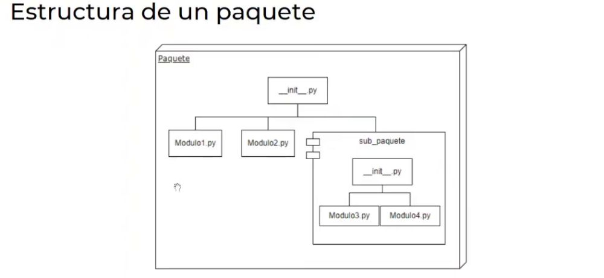

Django Notas
1. Definición y Tipos
Módulos:
Un Módulo es un fichero conteniendo definiciones y declaraciones de Python.
- Funciones, variables, etc.
Paquete:
Un paquete es una forma de estructurar el espacio de nombres de módulos de Python usando "Nombres de módulo con puntos"
Librería standard de Python:
Math
- math
- statitcs
- random
Text Processing
- string
- re
- readline
File System
- os.path
- fileinput
- gzip
- zipfile
File Formats
- configparser
- csv
Data Types
- colecctions
- array
- datetime
- calendar
Operating System
- platform
- os
- io
2. Que es Pip
Que es Pip
- Este es un sistema de gestión de paquetes sencillo utilizado para la instalación y administración de paquetes que puede ser encontrados en el Python Package Index (Pypi)
Don't repeat yourserf
3. Estructura de un paquete

El paquete propio con el nombre propio..
- __init__.py
-> Si hay un subpaquete.. Tambien lleva un init
- __init__.py -> Puede ir vacío, es necesario para CONFORMAR el paquete.
* Para importar de manera directa.. import empleado.. Se puede hacer si está en la misma carpeta o si es parte de la libería estandard
Para armar un paquete, debemos hacer que el paquete se haga "DISTRIBUIBLE"..
- A la altura del paquete que deseo armar.
- Creamos un archivo setup.py dentro de la raíz de nuestro proyecto y dentro..
from setuptools import setup
setup(
name="recursos_humanos",
version="0.2",
description="Paquete de ejemplo de empleados y nómina",
author="Codo a Codo",
author_email="io.codoacodo@bue.edu.ar",
url="https://www.buenosaires.gob.ar/educacion/codo-codo",
packages=['recursos_humanos', 'recursos_humanos.personal'], -> Indicamos el paquete y subcarpeta
scripts=[]
)
Con esto.. Lo levanteremos con un ambiente virtual.
python -m venv
Para installar el paquete espepecifico.. Apuntamos al archivo setup.py del paquete que deseamos armar.
- python setup.py sdist
* Esto crea un un archivo de tipo tar.gz.. Luego lo instalamos.
- pip install recursos_humanos-0.1.tar.gz
* Ahora instalamos ese paquete.
- Ahora desde nuestro entorno virtual podremos instalar el Paquete
* De esta manera con ese paquete podemos reutilizar la información*
- 1ª busca en las librerías por defecto de python.
- 2ª busca en nuestro entorno virtual
- pip install recursos_humanos-0.2.tar.gz
* Si instalamos la versión 2, la actualiza..
* Desde las librerías de pipinstall, si la tuvieramos instaladas sería más sencillo para uppgradera.
Ahora preparamos el ambiente.. Entramos a la carpeta deseada.
* Lo recomendable es crear una carpetas con todos los entornos.. Pero también si no especificamos la ruta, lo creamos en el propio repositorio
- python -m venv C:\Envs\django_2023 -> Con la ruta especifica carpeta
- python -m venv django_2023 -> En la propia carpeta
Ahora activamos el entorno virtual..
- .\django_2023\Scripts\activate
Dentro dle entorno virtual, instalamos la versión de Django 3.2
- pip install Django==3.2
- djgango-admin -> Para comeng
* Otra manera es armar un archivo .bat.. Con el cual activamos el entorno virtual directamente.
@echo off
cmd /k d:\Envs\django_2022\Scripts\activate
4. Breve Repaso a Poo
Breve Repaso a Poo
¿Qué es POO?
El Paradigma orientado a objetos, define los programas en término de
comunidades de objetos. Los objetos con características comunes se
agrupan en clases.
ES UNA FORMA DE VER EL MUNDO
• Reduce la brecha entre el mundo de los problemas y el mundo de
los modelos.
• Conceptos comunes a lo largo de todo el ciclo de vida
• Uso de patrones
• Aumento complejidad de los sistemas
• Aumento de necesidad de reutilización